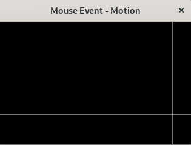

マウスをWindow上で上下・左右に動かしたときの動作を指定します。
update:2025/1/2
#include <gtkmm.h>
#include <iostream>
class Screen : public Gtk::DrawingArea {
public:
Screen();
~Screen() = default;
int center_x;
int center_y;
void on_draw(const Cairo::RefPtr<Cairo::Context>& cr, int width, int height );
};
Screen::Screen()
{
set_draw_func(sigc::mem_fun( *this, &Screen::on_draw ));
}
void Screen::on_draw(const Cairo::RefPtr<Cairo::Context>& cr, int width, int height ) {
// BackgroundColor
cr->set_source_rgba( 0.0, 0.0, 0.0, 1.0 );
cr->paint();
// coordinate axis
cr->set_line_width(0.9);
cr->set_source_rgba( 1.0, 1.0, 1.0, 1.0 );
cr->move_to( 0, center_y);
cr->line_to( width, center_y);
cr->move_to( center_x, 0 );
cr->line_to( center_x, height );
cr->stroke();
}
class MyWindow : public Gtk::Window
{
public:
Screen plt;
MyWindow();
virtual ~MyWindow() = default;
private:
// Signal handlers
void on_mouse_motion( double x, double y );
};
MyWindow::MyWindow() {
set_title( "Mouse Motion" );
set_default_size( 320, 240 );
auto m_controller = Gtk::EventControllerMotion::create();
m_controller->signal_motion().connect(
sigc::mem_fun( *this, &MyWindow::on_mouse_motion ));
plt.add_controller( m_controller );
set_child( plt );
}
void MyWindow::on_mouse_motion( double x, double y ) {
plt.center_x = (int)x;
plt.center_y = (int)y;;
std::cout << "x:" << plt.center_x << " y:" << plt.center_y << std::endl;
plt.queue_draw();
}
int main(int argc, char* argv[])
{
auto app = Gtk::Application::create( "gtkmm4.example" );
return app->make_window_and_run<MyWindow>( argc, argv );
}
| Mouse event | |
|---|---|
| Console | Window |
|
x:65 y:145 x:97 y:151 x:187 y:154 x:287 y:154 |
 |